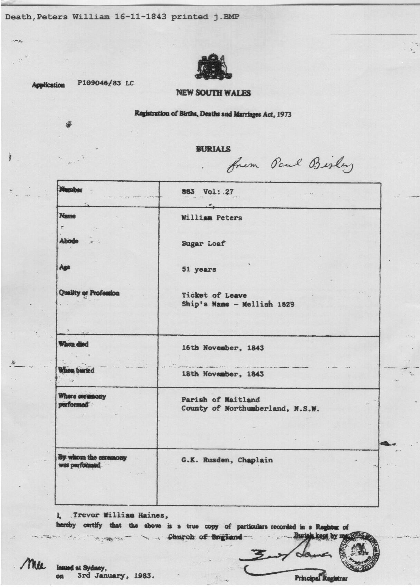
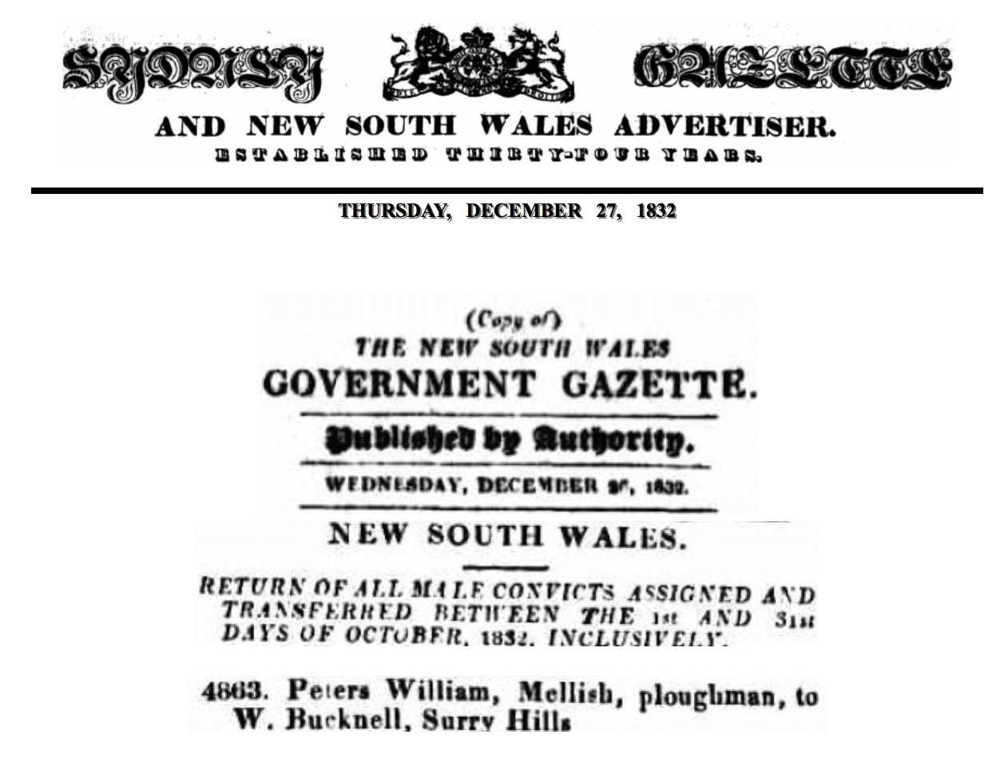
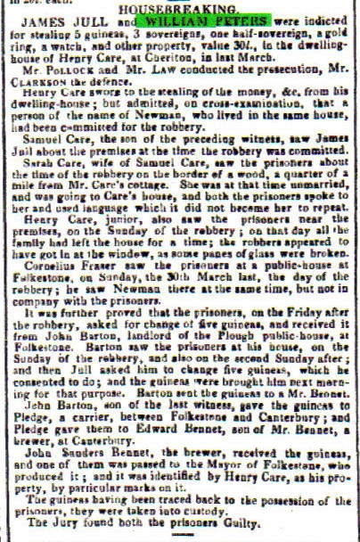
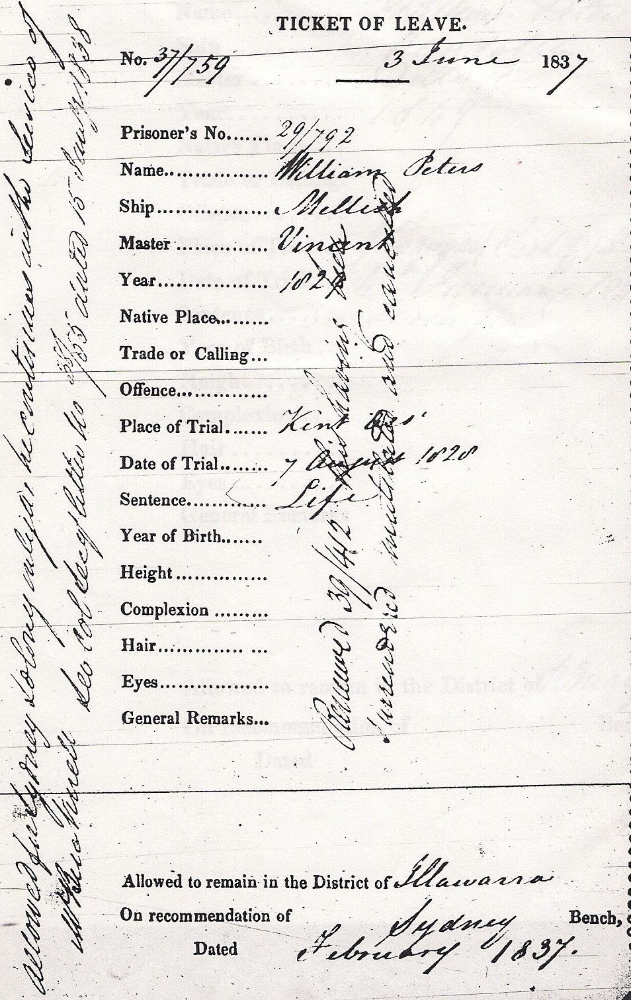
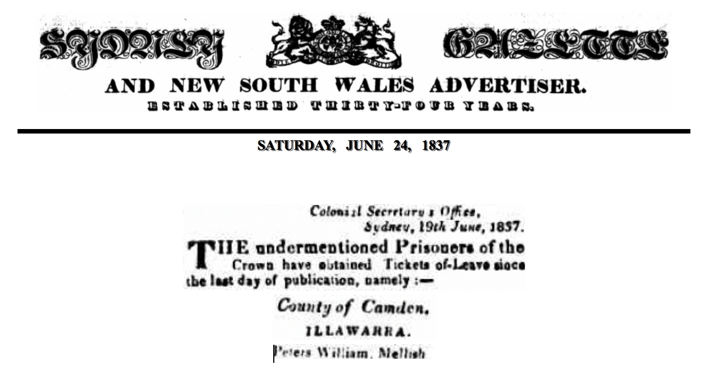
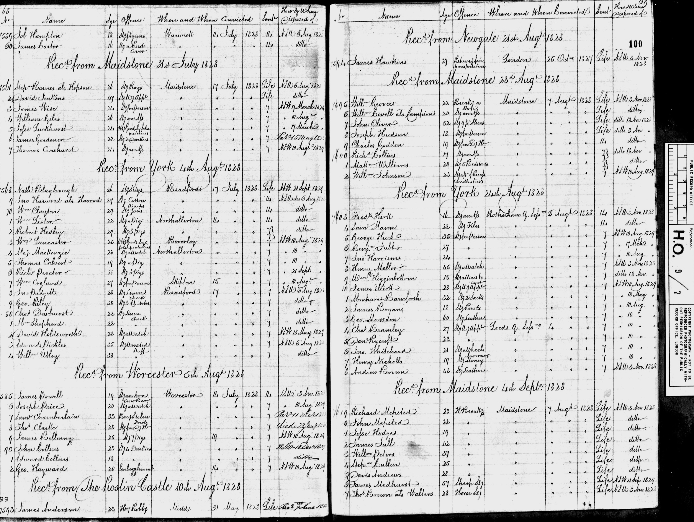
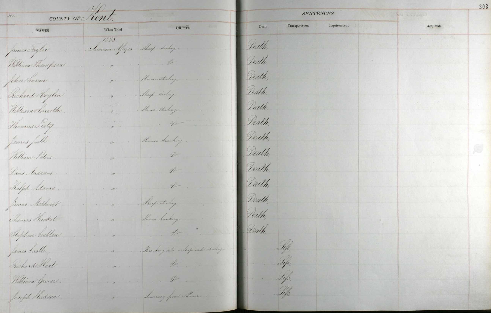
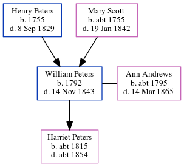

William Peters 1792 - 1843
[ Home ] | [ Calendar ] | [ Surnames Index ] | [ Errors ] | [ Family History ]The child of Henry Peters and Mary Scott, William Peters, the four times great-uncle of Nigel Horne, was born in Folkestone, Kent, England in 17921,2,3,4,5,6, was baptised there at Parish Church of St Mary & St Eanswythe, Church St on 9 Dec 1792 and also married Ann Andrews (with whom he had 1 child, Harriet) there on 6 Feb 181310.
During his life, he was living in Woolwich, London, England on 4 Sept 18285; and in Australia in 18292. William appeared in court in Maidstone, Kent, England on 7 Aug 1828 (sentenced Transport to Australia). On 18 Apr 1829 he arrived in Sydney Cove, New South Wales, Australia.
He died on 14 Nov 1843 in Maitland, New South Wales, Australia6,7,8,9 and was buried Glebe Cemetery in Maitland on 18 Nov 18436.
Parents
- Henry was born in 1755
- Mary was born c. 1755
Children
- Harriet was born c. 1815
Citations
- New South Wales Deaths 1788-1945 - Findmypast
- New South Wales and Tasmania, Australia Convict Musters, 1806-1849 Online publication - Provo, UT, USA: Ancestry.com Operations Inc, 2007.Original data - Home Office: Settlers and Convicts, New South Wales and Tasmania; (The National Archives Microfilm Publication HO10, Pieces 5, 19-20, 32-51); The National Archives of th
- New South Wales, Australia, Convict Indents, 1788-1842 Online publication - Provo, UT, USA: Ancestry.com Operations, Inc., 2011. This collection was indexed by Ancestry World Archives Project contributors.Original data - Indents First Fleet, Second Fleet and Ships. NRS 1150, microfiche 620–624.State Records A
- New South Wales, Australia, Settler and Convict Lists, 1787-1834 Online publication - Provo, UT, USA: Ancestry.com Operations Inc, 2007.Original data - Home Office: Settlers and Convicts, New South Wales and Tasmania; (The National Archives Microfilm Publication HO10, Pieces 1-4, 6-18, 28-30); The National Archives of t
- UK, Prison Hulk Registers and Letter Books, 1802-1849 Online publication - Provo, UT, USA: Ancestry.com Operations, Inc., 2010. This collection was indexed by Ancestry World Archives Project contributors.Original data - Home Office: Convict Prison Hulks: Registers and Letter Books, 1802-1849.Microfilm, HO9,
- Web: International, Find A Grave Index Ancestry.com Operations, Inc.
- Australia Death Index, 1787-1985 Online publication - Provo, UT, USA: Ancestry.com Operations, Inc., 2010.Original data - Compiled from publicly available sources.Original data: Compiled from publicly available sources.
- Find A Grave http://www.findagrave.com
- New South Wales, Australia, Convict Death Register, 1826-1879 Online publication - Provo, UT, USA: Ancestry.com Operations Inc, 2007.Original data - New South Wales Government. Convict Death Register. Series 12213, SR Reel 690. State Records Authority of New South Wales, Kingswood, New South Wales, Australia.© the Cr
- Public Member Trees Online publication - Provo, UT, USA: The Generations Network, Inc., 2006.Original data - Family trees submitted by Ancestry members.Original data: Family trees submitted by Ancestry members.
Media
William Peters - Burial Certificate

William Peters - Convict Assignment

William Peters. Home Circuit Maidstone, Kent. Co

Ticket of Leave

William Peters - Convict Assignment
William Peters - Ticket of Leave

Records of the Hulk Retribution

William Peters - criminal register

New South Wales Deaths 1788-1945 Transcription - ANZ-BMD-NSW-D-0006726464
England Marriages 1538-1973 - R_848170966
England Marriages 1538-1973 - R_848366686
England Marriages 1538-1973 - R_847836960
Kent Baptisms - GBPRS/CANT/B/96141385
England Births & Baptisms 1538-1975 - R_885253866
Family Tree
Map
Generated by ged2site. Last updated on Jul 3, 2024
Known Issues
Date of baptism (9 Dec 1792) before date of birth (1792)
Listed in the residence for 4 Sep 1828, but spouse Ann Andrews is not
Listed in the residence for 1829, but spouse Ann Andrews is not
Departure record without destination